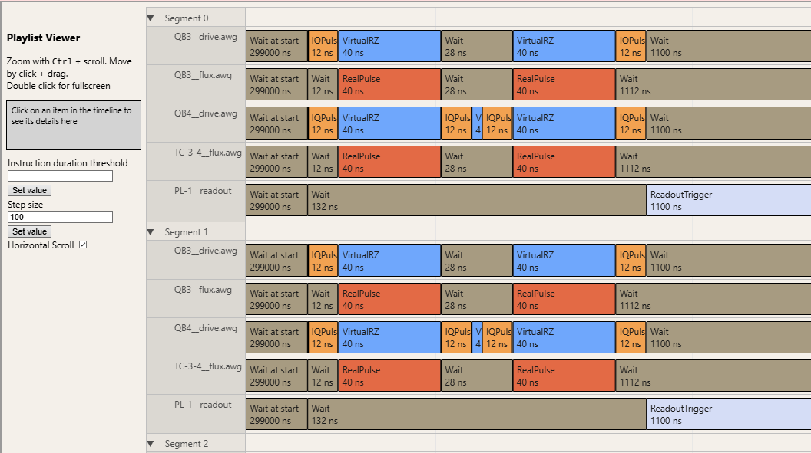
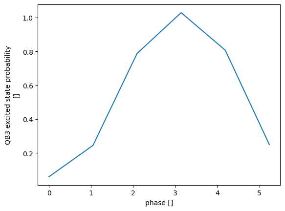
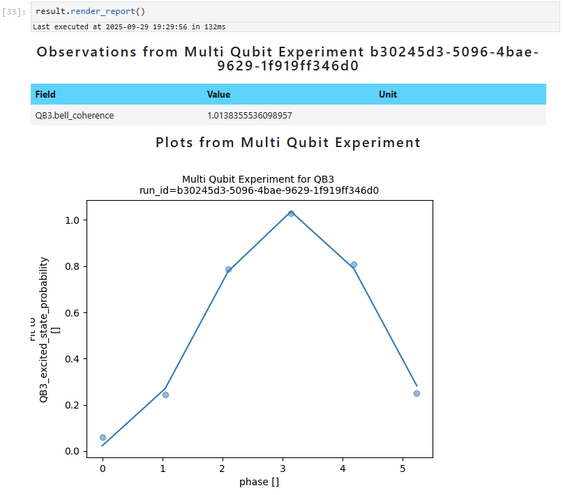
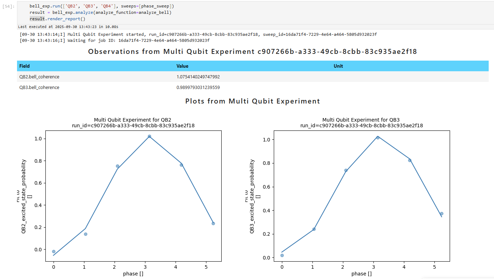

Prototyping your experiment#
Imports and setup#
The Experiment framework
allows one easy prototyping of almost any experiment idea. Open your favourite Python IDE or a Jupyter notebook and
let’s get started! Make sure you’re connected to a station - it is always better to prototype with a real QPU, but a
simulated or a mock station will allow you to execute most of the code successfully.
We are going to need some imports:
import numpy as np
from exa.core import Experiment, AnalyzeResult, TimeBox
These are only the classes we will actually need to use – for the purpose of typing we would need more, but since we are prototyping, this will not be necessary.
Basic prototype#
We will start by defining our circuit generation function. We will learn more about those later, but for now let’s explore the simplest version of it. We will write an experiment that is not too simple, but also not too complicated – we will prepare a Bell state, apply a Z rotation and then uncompute the state to measure its coherence. It will need to sweep a phase, or the angle of applied Z rotation, but otherwise the circuit will not change.
def bell_coherence_circuit(components, builder, phase: float = 0.0) -> list[TimeBox]:
qubit_0_hadamard = builder.get_implementation("u", (components[0],))(np.pi/2, 0, np.pi)
qubit_1_hadamard = builder.get_implementation("u", (components[1],))(np.pi/2, 0, np.pi)
qubit_1_rz = builder.get_implementation("rz", (components[1],))(phase)
cz = builder.get_implementation("cz", (components[0], components[1]))()
circuit = TimeBox.composite([])
circuit += qubit_0_hadamard
circuit += qubit_1_hadamard
circuit += cz
circuit += qubit_1_hadamard
circuit += qubit_1_rz
circuit += qubit_1_hadamard
circuit += cz
circuit += qubit_1_hadamard
circuit += qubit_0_hadamard
return [circuit]
Let’s unpack this. First, the argument components will be populated with the components we later pass when we run
the experiment. In this case, we will use two qubits. The argument builder is
ScheduleBuilder, which Experiment will populate automatically with the correct gate calibration.
Then, any remaining arguments will be turned into circuit settings for us to change or sweep, with the default
value given in the signature.
Inside the function we first create all the gates, and then add them to the circuit in order. This is of course a
matter of preference. Some gates, like u or rz admit arguments, others, like cz, don’t. What the
get_implementation() call is returning is a gate factory, a class
containing the calibration for a specific locus, which is then called to produce the gate implementations. The locus
can be any sequence, for example tuple or list, of computational components.
You may observe that the circuit does not contain any measurements. This is because by default, Experiment appends measurements to the circuit automatically during the compilation. I will explain how to modify this behaviour shortly.
Notice that the final output of this function is a list, and it is a list of these TimeBox
objects. When the function is called, the builder will know all the calibration and thus the output of the
function will contain unscheduled pulses, which are later scheduled into a full playlist. This means what is output
isn’t really an abstract circuit, but a very specific series of pulses implementing a circuit. Nevertheless, the
circuit generation function is called that because it can be created while thinking only in an abstract way.
Next, let’s initialize an Experiment instance with this circuit:
bell_exp = Experiment(circuit_generation_function=bell_coherence_circuit)
bell_settings = bell_exp.get_settings()
We also create a SettingNode object that contains all the experimental settings,
including instrument settings, gate calibrations and circuit parameters. Let’s create a sweep over the
phase:
phase_sweep = bell_settings.stages.circuit_generation.circuit.phase.sweep(np.linspace(0, 2 * np.pi, 6, endpoint=False))
Experiment can be run with two connected qubits (called QB3 and QB4 in our example). Before executing the experiment,
we may want to look if the final schedule (after Experiment compilation) makes sense and corresponds to
what we wanted to achieve. To do so, we call:
bell_exp.inspect_segment(['QB3', 'QB4'], sweeps=[phase_sweep], segments=[0,1,2,3,4,5])
We will see an interactive window containing the full schedule:

Each channel corresponds to a specific instrument line, a drive, flux or readout. Each element can be clicked and inspected further. We see that the schedule we had in mind is correctly represented.#
Now, we can run our experiment.
bell_exp.run(['QB3', 'QB4'], sweeps=[phase_sweep])
We now wait until the experiment has run. Afterwards, we may access the run result under bell_exp.last_run. This is
a RunResult object, which contains two main attributes: run_definition
and dataset. The former is a collection of metadata and additional properties
that characterize the experimental run before the execution, and the latter is an xarray.Dataset object
containing the collected and post-processed experimental data.
A good practice is to take note of the experiment run id, a UUID under which the collected data are stored in the
database you are connected to. It is stored in bell_exp.last_run.run_definition.run_id .
Next, let’s have a look at the dataset. We used the default readout post-processing mode, complex, but regardless
of that mode any Experiment dataset will always have a data variable called QB3_excited_state_probability, which
corresponds to readout-post-processed estimate of the probability of measuring QB3 in the excited state. We can use the
xarray plotting functionality to visualize the data:
bell_exp.last_run.dataset.QB3_excited_state_probability.plot()
Resulting in the following figure:

The in-built xarray plotting lets us quickly visualize the data. The x label is not that descriptive,
because we are prototyping and did not provide any information about what “phase” is. We see the
Z rotation applied to QB4 has been successfully transferred to QB3 through the uncomputation of the Bell state.#
Data analysis#
Most of the time when prototyping, one would analyze the data in the notebook directly. However, Experiment provides an analysis framework which should be used when writing a new experiment, and can also be used while prototyping, so we will take this opportunity to introduce it.
Exa contains several fitting and analysis helpers, we will use one of them to generate a fit to the experimental data. Measuring qubit phase through a combination of an RZ, Hadamard and a Z measurement is a common trick, so fast and efficient methods for its extraction exist.
from exa.core.util.phase_helper import get_phase_array
from exa.core import annotate
def analyze_bell(components, run_result) -> AnalyzeResult:
result = AnalyzeResult(run_result=run_result)
dataset = result.dataset
components = components or run_result.run_definition.additional_run_properties["components"]
target_qubit = components[0]
target_data = dataset[f"{target_qubit}_excited_state_probability"]
fit, phase, amplitude = get_phase_array(
target_data,
"phase",
)
annotate(phase, "phase", prefix = target_qubit)
annotate(amplitude, "amplitude", prefix = target_qubit)
result.add_arrays(fit, phase, amplitude)
return result
The analysis function has two arguments – components and run_result. It also supports additional arguments,
which contain more information about the experiment – but we will learn about that later. Unlike the circuit
generation function, the first argument is not automatically populated, and its purpose is to limit the analysis to
certain components, a feature important for large, parallel experiments. For that reason, we first find all the
components in the run_result in case they were not provided. In this case, we are only interested in the state of
the first qubit. We use the phase fitting function to obtain a fit, then add all the calculated quantities to the
result. After writing this function, we may analyze our experimental data:
result = bell_exp.analyze(analyze_function=analyze_bell)
result.render_report()
We can render the analysis report, but it is currently empty. We can populate it by adding plots and observations. Let’s add a simple plot showing the data with a fit and some observations.
import matplotlib.pyplot as plt
from exa.core import wrap_mpl_plot
@wrap_mpl_plot
def plot_bell_data_with_fit(
run_result,
target_qubit,
):
fig = plt.figure()
run_result.dataset[f"{target_qubit}_excited_state_probability"].plot(
marker="o", linewidth=0, alpha=0.5, label="data"
)
run_result.dataset[f"{target_qubit}_excited_state_probability_fit"].plot(color="C0", label="fit")
plt.title(f"{run_result.run_definition.experiment_label} for {target_qubit} \nrun_id={run_result.run_definition.run_id}")
return fig
What we just wrote is a plot function – a function that takes the run result and plots the data. This function, together with some default arguments, creates a plot definition, which is attached to the analyze result. The reason to do plotting like this is to only create the plots if they are needed – the function is only executed if you ask for the plot to be generated. An experiment can be included in a calibration procedure that runs autonomously, when there is nobody to look at these plots. You should never just create plots directly in the analyze function!
Let’s attach this plot to the analysis result:
from exa.core import PlotDefinition
def analyze_bell(components, run_result) -> AnalyzeResult:
result = AnalyzeResult(run_result=run_result)
dataset = result.dataset
components = components or run_result.run_definition.additional_run_properties["components"]
target_qubit = components[0]
target_data = dataset[f"{target_qubit}_excited_state_probability"]
fit, phase, amplitude = get_phase_array(
target_data,
"phase",
)
annotate(phase, "phase", prefix = target_qubit)
annotate(amplitude, "amplitude", prefix = target_qubit)
result.add_arrays(fit, phase, amplitude)
result.plots["__".join(components)] = PlotDefinition(
plot_bell_data_with_fit,
default_kwargs={"target_qubit": target_qubit},
)
if not amplitude.dims:
result.add_observation(
dut_field=f"{target_qubit}.bell_coherence",
value=2 * amplitude.item(),
unit="",
)
return result
Now, running
result = bell_exp.analyze(analyze_function=analyze_bell)
result.render_report()
yields this:

The exa.core.analyze_result.analyze_result.AnalyzeResult.render_report() allows visualization of plots and observations from the experiment. Here,
we see that our coherence might be too good to be true… Probably the readout error has been over-mitigated.#
All in all, our analyze function first retrieves the correct target qubit, finds data in the dataset, fits it, creates a plot and adds an observation for the “coherence” of the Bell state. Here, the error is actually dominated by the readout and its mitigation, but in general this coherence could be a way to bound the state fidelity from above.
Note
Q: I understand why the circuit generation function needs to be a function – Experiment supplies all the calibration information, and the output of the function is then compiled into physical schedule on the chip, which seems very difficult to do manually. But I do not see the point of writing an analyze function – I can do all of that just in the notebook! I have the resulting dataset, I can visualize the data, fit them, all in the notebook – I am just prototyping. What is the reason to package it into an analyze function?
A: Good observation. Analysis is currently the least mature part of exa, some call it just a “collection of random
scripts”. Nevertheless, there still are specific guidelines to follow, regarding plots and observations for example.
There are two reasons to write these functions when prototyping. First, you are forcing yourself to think a bit more
abstractly; use a generic target_qubit instead of 'QB3', as you might have done in the notebook. This makes
it easier to then use the same code to analyze the experiment run on a different subset of the chip, and the
function you write while prototyping can be later directly attached to the Experiment subclass you create. The second
reason has to do with the convenience analyze functions provide when using the parallel framework, which is what
we are going to cover next.
Prototyping parallel experiments#
One useful method of Experiment is Experiment.process_run_components(). This method converts the run
components Experiment receives – typically a list of qubits – into a more structured object, which can then be passed into
the circuit, sweeps and analyze functions. While prototyping, you will most likely not override this method, but you can
control its behaviour by setting a Experiment.parallel_group attribute. The main purpose of the
processing is to split all the run components into smaller sets, such that the experiment can be executed in parallel on
multiple of these sets at the same time. If your experiment is primarily two-qubit experiment, you may want to execute
it on many pairs of qubits simultaneously.
Here’s how the components are processed if you specify that your experiment is a two-qubit parallel experiment:
All the possible connected pairs of qubits within the submitted list of components are found from the chip topology.
Then, the pairs are colored – or split into the minimum number of sets such that no two pairs in one set share a qubit. That would be impossible to run simultaneously! Mathematicians call these sets matchings.
The experiment is then performed the number of times equal to the number of colors, each time on all the pairs included in that color/matching.
All we need to do to utilize the power of the parallel framework for the Bell coherence experiment, is slightly modify the circuit and the analyze functions:
from exa.core.experiment.utils import plot_with_circuit_index
from functools import partial
def bell_coherence_circuit(group, builder, phase: float = 0.0) -> TimeBox:
qubit_0_hadamard = builder.get_implementation("u", (group[0],))(np.pi/2, 0, np.pi)
qubit_1_hadamard = builder.get_implementation("u", (group[1],))(np.pi/2, 0, np.pi)
qubit_1_rz = builder.get_implementation("rz", (group[1],))(phase)
cz = builder.get_implementation("cz", group)()
circuit = TimeBox.composite([])
circuit += qubit_0_hadamard
circuit += qubit_1_hadamard
circuit += cz
circuit += qubit_1_hadamard
circuit += qubit_1_rz
circuit += qubit_1_hadamard
circuit += cz
circuit += qubit_1_hadamard
circuit += qubit_0_hadamard
return circuit
def analyze_bell(group, run_result, data_color, circuit_index) -> AnalyzeResult:
result = AnalyzeResult(run_result=run_result)
target_qubit = group[0]
target_data = data_color[f"{target_qubit}_excited_state_probability"]
fit, phase, amplitude = get_phase_array(
target_data,
"phase",
)
annotate(phase, "phase", prefix = target_qubit)
annotate(amplitude, "amplitude", prefix = target_qubit)
result.add_arrays(fit, phase, amplitude)
result.plots["__".join(group)] = PlotDefinition(
partial(plot_with_circuit_index, plot_bell_data_with_fit, circuit_index),
default_kwargs={"target_qubit": target_qubit},
)
if not amplitude.dims:
result.add_observation(
dut_field=f"{target_qubit}.bell_coherence",
value=2 * amplitude.item(),
unit="",
)
return result
We changed the argument components to group everywhere and we removed the line which was getting all the
components from the run result – it is not necessary, because the parallel framework will now feed the pairs to the
analyze function as well. We also used additional arguments: data_color, which only contains the data for the
parallel layer we are interested in, and circuit_index which is the index of the colored set our pair belongs to.
This index is used to wrap the plotting function to correctly only plot the data collected when executing that circuit.
We still need to tell Experiment that we want the execution to be parallelized over connected pairs, but after we do so, each of these functions will just receive a tuple of two qubits, which are guaranteed to be connected on the chip – and thus have a CZ gate defined between them. Each of these functions will therefore be executed multiple times, which now justifies writing an analyze function a bit better!
To initialize the experiment, we now call:
from exa.core import ParallelGroup
bell_exp = Experiment(circuit_generation_function=bell_coherence_circuit)
bell_exp.parallel_group = ParallelGroup.CONNECTED_PAIRS
bell_settings = bell_exp.get_settings()
And we can run the experiment, for example like this:
bell_exp.run(['QB2', 'QB3', 'QB4'], sweeps=[phase_sweep])
result = bell_exp.analyze(analyze_function=analyze_bell)
result.render_report()
I am using a 5-qubit chip, where QB3 is connected to the other 4 qubits, so the automatic coloring will select the pairs QB2-QB3 and QB3-QB4 for me. These cannot be run in parallel, so the experiment will execute first on the first pair, and then on the second pair. On a bigger chip, the results would be slightly more impressive.

Now the report shows data for two pairs. The observations could be called something better, but for the prototyping stages this is fine – we are not saving them!#
There are more options for the parallel framework, using one qubit, disconnected pairs, qubits on the same probeline – that will be covered later. We hope you now feel more confident prototyping and running experiments using Experiment.
Remember, you can also use Experiment subclasses to prototype, if they are already implementing some of the behaviour you want. Any Experiment subclass can be initialized with an overridden circuit generation function, and most can also have their analysis function replaced. In the future, it will also be easier to replace the default sweeps. This means you can pick and choose which implemented properties of another subclass you’d like to use for a quick prototype.
Speaking of Experiment subclasses, let’s now learn how to write one. We already know about circuits, sweeps and analysis, but there is more that goes into a mature Experiment subclass!